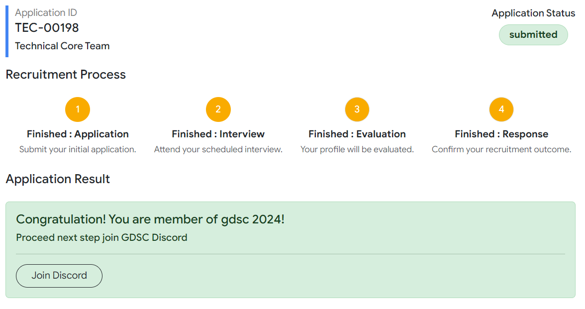

Plans for studying in CSTU
Year 1
Join clubs, societies, or extracurricular activities to build social connections and start developing soft skills.
Your 2
Focus more on courses directly related to your major, delve deeper into your field, and consider taking supplementary courses.
Year 3
Concentrate on specialized subjects, prepare for projects or internships, and start thinking about your final thesis or capstone project.
Year 4
Dive into a full-time internship to gain hands-on experience in your field, applying the knowledge and skills acquired throughout your studies.
What Was Actually Done
Year 1 : Join clubs ☑
I tried applying and became a member of the GDSC gathering.
